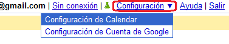
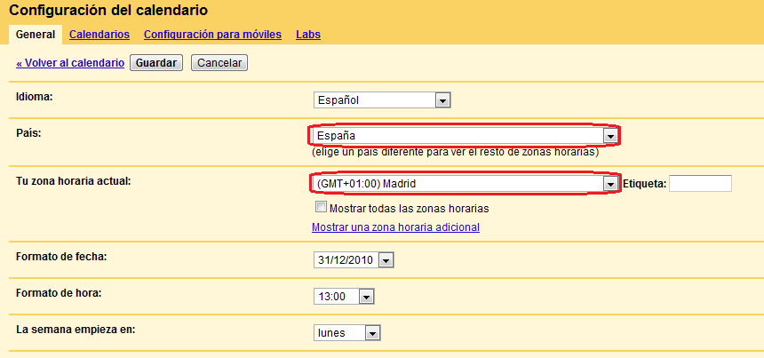

Activar el servicio de mensajes vía SMS.
Este servicio te permite enviar mensajes a tus amigos por SMS. Es
totalmente gratuito.
A continuacion te daremos los pasos que debes seguir:
- Primero debes tener una cuenta de google calendar. Si aún no la tienes
la puedes crear gratuitamente en
google
calendar
- Ahora accede a tu cuenta.
- En la parte superior de tu calendario, encontrarás un menu de
configuración. Ábrelo y accede a tu Configuración de Calendar.
- 
- Procederemos a configurar tu zona horaria. Esto es importante, ya que si
tu zona horaria es diferente, recibirás los mensajes fuera de hora, o no los
recibirás.
- 